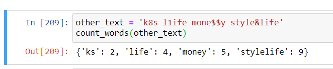

הגשתי את התרגיל, וקיבלתי הודעת שגיאה שאני לא מבין. ליתר בטחון, הרצתי את הקוד שוב, כאשר ביקשתי ממנו להדפיס גם את התוצאה שלי, וגם את התוצאה הצפויה, והוספתי שורות תנאי שמדפיסות אך ורק אם המילונים זהים (הוספתי צילומסך של הקוד לא כפי שהגשתי אותו, אלא לאחר שהוספתי את שורות ההדפסה לצורך בדיקה). אני לא מבין מה קורה פה.
{kind=link}
{kind=link}
קשה לדעת בלי לראות את הקוד, אני אנחש שהקוד שלך לא מתמודד היטב עם סימנים שאינם אותיות באמצע המילה (strip לא מספיק פה)
חשבתי שמצאתי את הבעיה אבל טעיתי. אפשר קישור לתרגיל?
לייק 1
מה הכוונה “קישור לתרגיל”? יש דרך שבה אני יכול לתת לך גישה למחברת שלי?
אתה יכול לתת לי קישור להעלאה שלך במערכת, כן. כנס אליו ושלח לי את הקישור שמופיע בשורת הכתובות
בדוגמה שכתובה בתרגיל זה עובד, אבל בהרבה מקרים אחרים זה לא. נסה להמציא טקסט עם הרבה מקרי קצה ולבדוק באילו מקרים הקוד שלך לא מחזיר תוצאה טובה מספיק
אוף חשבתי שכבר פתרתי את זה. יש לך אולי הכוונה למה אני עושה לא נכון?
אני מאמין שחוץ מים (שראה את הקוד), יהיה לנו קשה להכווין אותך, ובכל זאת… בוא ננסה 
הדבר הראשון שעלה לי הוא שתעשה בדיקה בנוגע למהם הסימנים ה"לא רצויים" שאתה מסנן. האם סיננת את כל הסימנים שרלוונטיים להגדרה הזו?
כשביצעתי קומפריהנשן השתמשתי ב string.punctuation אז אני די בטוח שחיסלתי כל מה שאפשר לחסל. אני חושד שהקושי טמון במעברי השורות, אבל אני לא יודע.
אני חושדת שזה לא קשור למעברי השורות, אלא למקרים כמו he11o למשל 
לייק 1
השתמתי ב rstrip. זה אמור לחתוך תווים בלתי רצויים רק מקצוות המילה. בנוסף, כדי לעמוד בדרישות הדוגמה בתרגיל, ביצעתי lower לכל המלים (כך הן מופיעות בדוגמה, כולן באותיות קטנות). אולי זו הבעיה?
זו אכן הבעיה, תסתכל על המחרוזת שעליה נפל הבודק האוטומטי
אוקיי, העתקתי את המחרוזת ידנית (מתברר שאי אפשר לעשות לה קופי) והצבתי אותה. ביצעתי הדפסה אחרי כל שלב. המקום שבו הכל מתמוטט זה הדיקשנרי קומפריהנשן. משום מה הוא מחזיר לי שחלק מן המלים (שכולן מופיעות רק פעם אחת), חוזרות על עצמן מספר רב של פעמים. למה שיקרה דבר כזה, עם מלים כאלה אבל לא עם מלים “רגילות”?
{kind=link}
לא בטוחה שאני מבינה את השאלה. איזה מילים חוזרות על עצמן מספר רב של פעמים? ולמה יש לך מילים לא חוקיות במילון מלכתחילה? ההמלצה היתה לנקות את הטקסט מכל התווים הלא חוקיים לפני שלב המילון
הוא לא מחזיר לך אותם כמה פעמים המספר שם מייצג את אורך המילה.
ובכל מקרה שימי לב שהמילים האלה לא תקינות הוא לא אמור לקבל אותם בצורה הזו בכלל
אה. זה בלבול שלי בגלל כמות הזמן שאני יושב עכשיו על לתקן משהו שחשבתי שסיימתי איתו.
משהו שלא ברור לי,
גם אני נופלת בבודק האוטומטי על - 
אבל זה לא מה שביקשו? לנקות את הטקסט מתווים שהם לא אותיות ואז לספור?